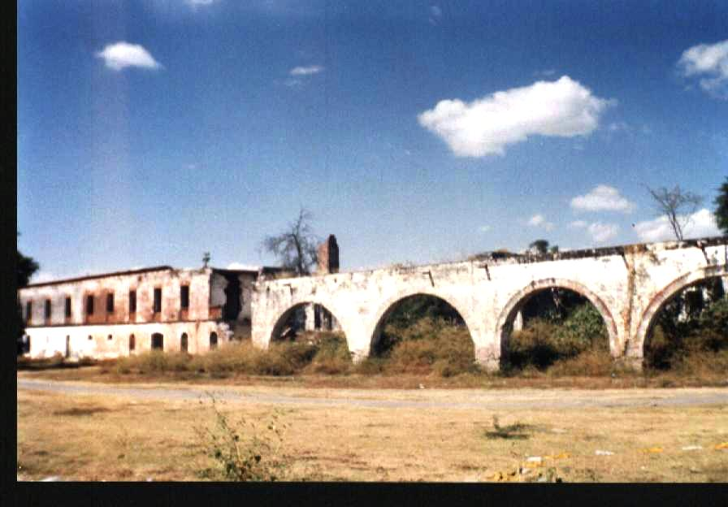
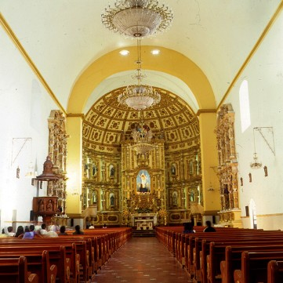
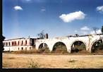

El Templo y Ex-convento Dominico, componen una auténtica joya arquitectónica que data del siglo XVI, construido por la orden de los dominicos, alrededor de 1552 se iniciaron los trabajos de construcción esta fecha se encontraba en el segundo arco de la bóveda de la iglesia después del acceso.
Se dedicó al culto en 1612 fecha que podemos observar en la fachada del templo debajo de la ventana del coro, en donde encontramos el escudo dominico, dentro del templo al centro podemos observar el retablo de estilo churrigueresco laminado en oro donde se encuentra la imagen de Santo Domingo de Guzmán, a los lados los Santos Patrones de los barrios, la capilla de la Virgen de la Soledad, la pila bautismal tallada monolíticamente en cantera que por su hermosura y dimensiones causa asombro, tiene un diámetro de 2.27 metros, dentro del ex convento destacan retratos de santos, cardenales, sacerdotes y religiosas de la orden dominica, que debieron ser pintados entre los años de 1630 y 1667 y en especial un claustro ornamentado con arcos de medio punto y bóvedas de crucería con nervaduras de estilo gótico, todo un conjunto digno de admirar.
En el púlpito de mampostería que se ubica del lado derecho del altar mayor, el 17 de diciembre de 1811 después de oficiar una misa los curas José María Morelos y Pavón y Mariano Antonio Matamoros Guridi, arengaron a la gente para luchar por la Independencia.
Ex hacienda de Raboso

El 3 de Agosto de 1935 se firma la escritura de venta de los predios y la parte libre que quedaba a la hacienda de Raboso luego de las afectaciones, 2,492 ha. 62 a. 39ca. De tierras de riego con todas sus instalaciones, canales, presas, vasos de la laguna de Epatlan y manantiales, caminos, ferrocarril e Ingenio. De esta manera, las magnificas tierras de Raboso, única hacienda importante del valle de Izúcar de Matamoros que había permanecido independientemente, pasaron a poder déla compañía civil e industrial de Atencingo. Es así como un tipo de capitalismo triunfa sobre un empresario de origen porfirista.